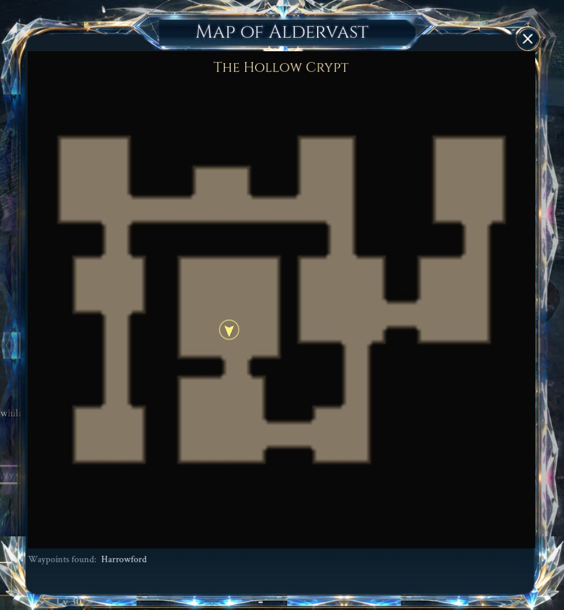

Dungeons are instanced: each group gets its own copy. Leave the party while inside (or be removed from it) and you are told you will be sent out: 30 seconds later, unless you rejoin, you are at the door; if the party breaks up, the dungeon passes to whoever is still in it. A kill's experience and quest credit go to the living members of the party nearby, not to those lying dead. Rooms are built from a stone kit for the dungeon's theme, and each boss room has a set piece that wakes with its boss.
The sixteen story dungeons each take a shape of their own: the Hollow Crypt winds down past its tombs, Rootdeep Warrens opens into caverns, the Drowned Grotto runs in a ring round a flooded arena, the Cinder Forge is a run of pillared halls, the Vault of the Last Lantern, the second chapter's dungeon, is a run of warm slate halls beneath the Glass Scar, the Moth-Eaten Loom, the third chapter's, is a warren of halls and chambers hung with moth-eaten tapestries beneath the Heartroot, the Hall of the Warp, the fourth chapter's, is a run of icy vaults strung with glowing warp threads and webs of glass beneath the Warp Pillars, the Undertow, the fifth chapter's, is a sea cave of black, barnacled rock beneath the Greywatch headland, its shingle floors holding glowing tide pools, the Selvage, the sixth chapter's, lies at the edge of the world's weave out along the glass boat's line, a run of halls floored with woven cords, and the Underweave, the seventh chapter's, lies down the drowned boat's thread beneath Frostmere on the wrong side of the weave, a ring of rooms in cold rimed rock whose floors show the back of the cloth, and the Looking Side, the eighth chapter's, lies through the Looking Arch at the Lattice Gate, Cinderreach woven again in silver the wrong way round, its halls lined with arched mirrors and its floors poured with silver, and the Far Side, the ninth chapter's, lies behind the Lattice Gate along Wenna's thread, halls of warm pale stone strung with white-gold warp whose windows look out on places that cannot be, and the Frozen Spinnery, the tenth chapter's, lies down the Carders' Stair in the glacier east of the Spire, open caverns walled in old blue glacier ice with floors combed like carded wool, and the Cutting House, the eleventh chapter's, lies under the Cloth Guild's half-fallen finishing house at the end of the Tenter Ground, timbered, whitewashed shops hung with cloth and the nap of a hundred years drifted on their floors like snow, and the Winding House, the twelfth chapter's, is the guild's old laying-out house below the Lych Field on the Saltreach downs, limed rooms and scrubbed white floors, with linen pinned to the dress forms that stand along the walls, and the Tailor's Hall, the thirteenth and last chapter's, is the Cloth Guild's Master's own hall under the Lattice Gate, its cutting floor, pressing room and hanging gallery climbing to the fitting dais under a glass roof. Each has a mini-boss lying under a set piece on the way down, and is done when both its bosses have fallen. Their bosses are made for five and do not scale; their loot is the dungeon's group drop, with no lockout.
The Hollow Crypt, Rootdeep Warrens and Trial of the Lattice are walked alone, and are made for one: a single pack to a room, 60% of a group's size and led by magic monsters at most, and bosses with 70% of their life that hit 85% as hard. On your own you take half of a boss's shared blow, and half of its adds rise; bring a companion and the fight is as it was. The halved shared blow holds wherever a hero fights a boss alone, raids and expeditions too.
Inside a dungeon the map window draws its floor plan, with you, your party and the dungeon's name (1.14.44).

Every dungeon and expedition is dressed from its own layout, the same for everyone in it: dirt gathers along the foot of every wall, each theme lays its own dust, moss, damp, standing water or soot over the floors, and the things each place would hold lie along the walls and in the corners, with cobwebs, shafts of light through the roof, low mist in the damp places and worn runners in some boss halls. None of it blocks the way. Each entry below lists its floors and what is strewn about.
There are two raids for up to 10 heroes: the Spire of the Sundered Crown, a level-30 raid of three bosses, and the Drowned Basilica on the Saltreach coast, a level-40 raid of four encounters. Both ask for the same answers: marks to run out with or gather on, wards to break before a channel ends, adds to stop before they crawl to their master, and Defenders who take turns. A party's leader can make it a raid, or the finder's Raids tab fills one with two Defenders, two Healers and six Damage, and companions take any empty places. Raid loot is personal and each encounter can be looted once a week (the week resets on Wednesday at 07:00 UTC). Each kill has a 35% chance of a raid item, 15% higher for every miss before it, and 65% of those items are a piece of your class's tier set.
The Lantern Order buried its knights beneath Brightmeadow for three hundred years. When the Hollowing came up out of the deep graves the crypt's warden would not leave his post, and the stair down to him winds past every grave the Order ever dug.
Made for one: a single pack to a room, 60% of a group's size and led by magic monsters at most, and bosses with 70% of their life that hit 85% as hard. On your own you take half of a boss's shared blow, and half of its adds rise; bring a companion and the fight is as it was
Dirt along every wall's foot, thickest in the corners, with dust and damp; passages worn smooth down the middle; low mist over the floors; shafts of light through the roof in some rooms
Strewn about
Bones and skulls, urns and candles in their own wax along the walls and in the corners, among fallen stones; cobwebs across the corners and a worn runner down the boss hall
Under the Thornwood the roots of the oldest trees open into caverns. Something woke down there and the forest began to grow inward, thorn by thorn, toward the villages.
Kind
Dungeon
Level
12
Rooms
11
Layout
Open caverns with ragged walls and wandering tunnels
Made for one: a single pack to a room, 60% of a group's size and led by magic monsters at most, and bosses with 70% of their life that hit 85% as hard. On your own you take half of a boss's shared blow, and half of its adds rise; bring a companion and the fight is as it was
Boss alone
The Bramble Queen has 62% of her life and 85% of her damage when a hero comes alone
A sea cave on the Saltreach coast where the tide runs in a ring round a flooded hall. Ships that hear the bell beneath the water steer for it, and none has steered out again.
Kind
Group dungeon
Level
16
Rooms
13
Layout
A ring of rooms round a great arena where the boss waits
Dirt along every wall's foot, thickest in the corners, with moss and standing water; low mist over the floors; shafts of light through the roof in some rooms
Strewn about
Shells in kelp and urns along the walls and in the corners, among fallen stones
The Ashen Choir woke a forge beneath Cinderreach that the old smiths had sealed. Its great halls burn day and night, and the iron that comes out of them is for war.
The Sundered King broke his own crown rather than give it up, and climbed into the Spire to wait for whoever came to take it. His Colossus guards the stair, his choir keeps the fires lit, and he has not stopped waiting.
Kind
Raid
Level
30
Rooms
18
Group
Up to 10 heroes; the raid finder fills two Defenders, two Healers and six Damage, and companions take the empty places
Each encounter's loot once a week; the week resets on Wednesday at 07:00 UTC
Loot
Personal: most often your class's piece of its tier set, or one of the boss's own uniques
Floors
Dirt along every wall's foot, thickest in the corners, with dust; passages worn smooth down the middle; shafts of light through the roof in some rooms
Strewn about
Books, candles in their own wax, urns and crystal clusters along the walls and in the corners, among fallen stones; cobwebs across the corners and a worn runner down the boss hall
Go to the Trial, on the Dungeon queue tab, takes you in at once, alone, from level 10; it is never queued for
Walked alone
Made for one: a single pack to a room, 60% of a group's size and led by magic monsters at most, and bosses with 70% of their life that hit 85% as hard. On your own you take half of a boss's shared blow, and half of its adds rise; bring a companion and the fight is as it was
When the sea took Old Kaldris's harbour the great basilica went down with its choir still singing. Something in the deep answered the hymn, and the drowned have kept the halls for it ever since.
Kind
Raid
Level
40
Rooms
12
Layout
Great pillared halls
Group
Up to 10 heroes; the raid finder fills two Defenders, two Healers and six Damage, and companions take the empty places
Each encounter's loot once a week; the week resets on Wednesday at 07:00 UTC
Loot
Personal: most often your class's piece of its tier set, or one of the boss's own uniques
Floors
Dirt along every wall's foot, thickest in the corners, with moss and standing water; passages worn smooth down the middle; low mist over the floors; shafts of light through the roof in some rooms
Strewn about
Shells in kelp, urns and candles in their own wax along the walls and in the corners, among fallen stones; a worn runner down the boss hall
When the Cinder Fall struck the wastes the Lantern Order sank a vault beneath the fused glass and lit a lantern there to hold the Hollowing under the earth. Its halls are slate and dressed stone, warm as a hearth, and in four hundred years the lamps along them have never once gone out.
Dirt along every wall's foot, thickest in the corners, with dust; passages worn smooth down the middle; shafts of light through the roof in some rooms
Strewn about
Candles in their own wax, books, urns and crystal clusters along the walls and in the corners, among fallen stones; cobwebs across the corners and a worn runner down the boss hall
Beneath the Heartroot the Weavers built the hall where the Lattice was first spun: pale stone vaults strung with warp threads of light, the Heartroot's roots breaking through the ceilings. Fifty years of the Pale Moth's hunger have left the threads in rags and the halls hung with silk.
Dirt along every wall's foot, thickest in the corners, with dust; shafts of light through the roof in some rooms
Strewn about
Rags, roots and candles in their own wax along the walls and in the corners, among fallen stones; cobwebs across the corners and a worn runner down the boss hall
Beneath the Warp Pillars, under the Frostspire's snow, the Loomwright's hall: slate vaults sheathed in ice, the Lattice's first warp strung glowing down every wall and out through the roof to the Pillars above. The glass spiders have webbed its halls from wall to wall in thread spun to a pattern nobody living has seen.
The sea cave beneath the Greywatch headland, older than the Light: black rock worn smooth by the tide and crusted with barnacles, kelp hanging at the tide line, and pools left glowing in every hollow when the water goes out. The Tideloom drifts in its deepest chamber, and the medusae it weaves fill the passages between.
Kind
Group dungeon
Level
43
Rooms
18
Layout
Open caverns with ragged walls and wandering tunnels
Dirt along every wall's foot, thickest in the corners, with moss and standing water; low mist over the floors; shafts of light through the roof in some rooms
Strewn about
Shells in kelp and crystal clusters along the walls and in the corners, among fallen stones
The edge of the world's weave, out past the sea at the end of the glass boat's line: a floor of woven thread laid over nothing, walls of warp strung taut into the dark, the great pegs the first Weavers drove to hold it standing in rows. Out here the cloth is thin and the weave runs loose, and everything the world lets go of drifts in and is wound into the Ravel.
The wrong side of the world's weave, down the drowned boat's thread beneath Frostmere: the back of the cloth, where every knot the world was ever tied with hangs in the dark like a star, the floats of thread run long and loose between them, and far overhead the mere's still water shines like a sky. Here the first Weavers' other boat came to rest, and here Ilsabet kept the back of everything, alone with her reflection.
Kind
Group dungeon
Level
47
Rooms
21
Layout
A ring of rooms round a great arena where the boss waits
Through the Looking Arch: the world the Forty wove on the Gate's loom out of their own silver, Cinderreach small and fine and the wrong way round, black glass underfoot and its ash falling up into the dark like sparks. Half-woven still: walk far enough down any road and it runs out into loose warp. At its heart, where Emberwatch ought to be, the one they wove it for stands waiting at her loom.
Round the back of the Lattice Gate and in along Wenna's thread: the Gate's far face, where every place past it is woven. Halls of warm pale stone strung with the far side's white-gold warp, and in every wall a frame that looks out on somewhere that cannot be: a desert under two suns, a sea hung over a sea, a city standing upside down in the sky. The Treadle walks her great wheel at the middle of it all, and at its heart the First Gatewarden stands at his loom.
Down the Carders' Stair in the glacier east of the Spire and in along the line of light: the King's Spinnery, where Gyda Thrum and her maids spun the world's warp at the foot of the spindle, frozen into the ice the night the crown was broken and thawing now from within. Its halls are walled in the glacier's old blue ice with the spinnery's wheels and stools standing in it where they were left, the Spire's crystal breaking through, the floors combed into furrows like carded wool, and the Spinster's line running up every wall toward the spindle. The Rolag crawls the carding hall, and at the foot of the spindle Gyda Thrum sits frozen to the waist, spinning.
Kind
Group dungeon
Level
53
Rooms
18
Layout
Open caverns with ragged walls and wandering tunnels
Down the stair under the Cloth Guild's old finishing house at the west end of the Tenter Ground: the shops where the guild's cloth was fulled and cropped and pressed and folded, and the Cutter-off's room at the bottom of them. Its halls are timbered and whitewashed, hung with cloth and stacked with folded bolts, the croppers' padded tables standing in rows with the nap of a hundred years drifted under them like snow, and every wall is notched where the shears were hung. The Great Shears walk the cropping shop, and in the folding room at the bottom Maud Kerf is folding something very large.
Dirt along every wall's foot, thickest in the corners, with dust; passages worn smooth down the middle; shafts of light through the roof in some rooms
Strewn about
Nap, table, bolts, rags and candles in their own wax along the walls and in the corners, among fallen stones; cobwebs across the corners and a worn runner down the boss hall
Down from the Lych Field into the Cloth Guild's laying-out house: the cold rooms where the guild's dead were washed and laid out on slate, the fitting room where the tailors cut to the great lay figure, and the sewing loft at the top of it all under the rafters, where the sheets were sewn. Its walls are limed and bare, its floors scrubbed white, lavender and rue hung drying from every beam, and linen everywhere: folded in presses, stretched on frames, pinned to the forms that stand along the walls with their arms out. In the loft Agnes Ellery is sewing something very large.
In from the Cutting Yard under the Lattice Gate to the Cloth Guild's Master's own hall, where the guild made its coats for kings: the long cutting floor with its tables and its shears hung on the walls, the pressing room where the great goose irons stand on the stoves, the hanging gallery where the finished coats hung in rows under their dust-sheets, and the fitting dais at the top of it all under a glass roof, with its tall mirrors, where the Master put the finished coat on the one who would wear it. Bolts of cloth lie everywhere half unrolled, pattern paper drifts across the boards, and every thread in the place runs uphill, to the dais, where Orrin Wend is waiting with the Coat.